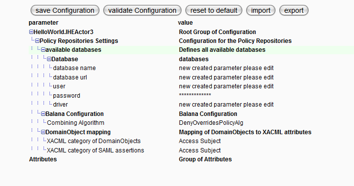
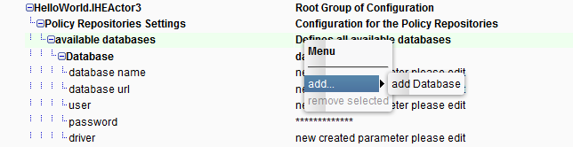

Component Browser

Topic content
The component browser is a new GUI tool to add, remove and rename component instances created with the new orchestra extended component framework.
For every instance you can edit the component configuration. The group and parameter definition of the configuration is defined sofxt.component.decl.xml file contained in the components jar file( see see Create your first Extended Component).
1. Component Tree
If you click on Component Browser the following window appears (depends on your installed components, if you have nothing the left tree is empty):
HelloWorld is the name of the appliication package and one of the components
IHEActor2 and IHeActor3 are two example components
Notes is an IBM Notes component
Then you right click on on of the component instances (leaf nodes in the tree) the following context menu appears
Context Menu with add, remove,copy and rename actions
You can add a new instance, remove and rename. The copy action is very handy if you want to create several instances with a similar or identical configuration.
2. Component Configuration Editor
If you click on any instance of a component the configuration editor appears on the right.
Component Configuration Editor - For HelloWorld Component
You could add/remove parameters and edit parameters
The groups and parameters are defined in sofxt.component.decl.xml file contaned in the components jar file.
There are predefined parameter Types :
Parameter Type String |
Java Type used for Validation |
|---|---|
Text |
String |
Int |
Integer |
Float |
Float |
Boolean |
Boolean |
PickList (a list of predefined values from which you can choose) |
String/List of Strings |
Encrypted( is stored encrypted in xml configuration) |
String |
An encrypted parameter is stored encrypted in the xml configuration file. In the editor the content is displayed as asterisks only.
The editor uses password fields (preventing copying of the content).
For all those types a predefined type validator exist.
You can program your own custom validation for any parameter in your component.

If you click in the middle of parameter and value columns, you can select one row of the table. If the row is highlighted in green you can add or remove groups or parameters there.
In our case we clicked on available databases and you can add another Database group. If the right click on the row and select the add menu the following context menu appears:

If you then click on add Database a new Database group will be added with all child elements ( only groups and parameters with a minimum cardinality of >= 1 will be added).
If you press validate configuration the following window appears if there are validation errors or warnings. Otherwise a simple confirmation dialog is displayed.
Example for component configuration validation
In an integer field the value was changed to 2a
In the editor view you the group and parameter are highlighted in red for errors or yellow for warnings and green for simple information events.
Example for a validation error
After finished editing a validation is automatically done
and the results are show immediatly